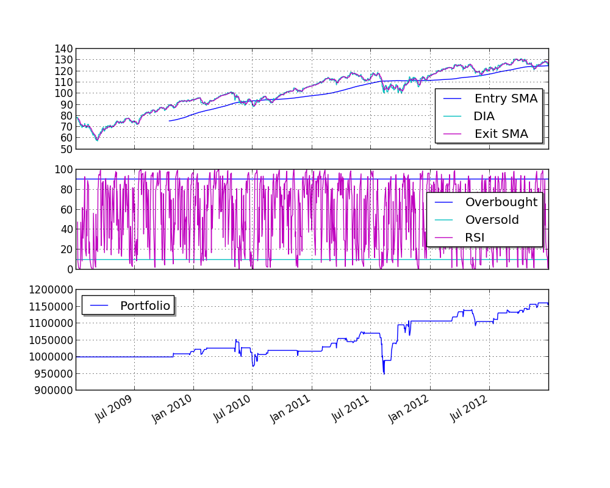

RSI2¶
This example is based on a strategy known as RSI2 (http://stockcharts.com/school/doku.php?id=chart_school:trading_strategies:rsi2) which requires the following parameters:
- An SMA period for trend identification. We’ll call this entrySMA.
- A smaller SMA period for the exit point. We’ll call this exitSMA.
- An RSI period for entering both short/long positions. We’ll call this rsiPeriod.
- An RSI oversold threshold for long position entry. We’ll call this overSoldThreshold.
- An RSI overbought threshold for short position entry. We’ll call this overBoughtThreshold.
Save this code as rsi2.py:
from pyalgotrade import strategy
from pyalgotrade.technical import ma
from pyalgotrade.technical import rsi
from pyalgotrade.technical import cross
class RSI2(strategy.BacktestingStrategy):
def __init__(self, feed, instrument, entrySMA, exitSMA, rsiPeriod, overBoughtThreshold, overSoldThreshold):
strategy.BacktestingStrategy.__init__(self, feed)
self.__instrument = instrument
# We'll use adjusted close values, if available, instead of regular close values.
if feed.barsHaveAdjClose():
self.setUseAdjustedValues(True)
self.__priceDS = feed[instrument].getPriceDataSeries()
self.__entrySMA = ma.SMA(self.__priceDS, entrySMA)
self.__exitSMA = ma.SMA(self.__priceDS, exitSMA)
self.__rsi = rsi.RSI(self.__priceDS, rsiPeriod)
self.__overBoughtThreshold = overBoughtThreshold
self.__overSoldThreshold = overSoldThreshold
self.__longPos = None
self.__shortPos = None
def getEntrySMA(self):
return self.__entrySMA
def getExitSMA(self):
return self.__exitSMA
def getRSI(self):
return self.__rsi
def onEnterCanceled(self, position):
if self.__longPos == position:
self.__longPos = None
elif self.__shortPos == position:
self.__shortPos = None
else:
assert(False)
def onExitOk(self, position):
if self.__longPos == position:
self.__longPos = None
elif self.__shortPos == position:
self.__shortPos = None
else:
assert(False)
def onExitCanceled(self, position):
# If the exit was canceled, re-submit it.
position.exitMarket()
def onBars(self, bars):
# Wait for enough bars to be available to calculate SMA and RSI.
if self.__exitSMA[-1] is None or self.__entrySMA[-1] is None or self.__rsi[-1] is None:
return
bar = bars[self.__instrument]
if self.__longPos is not None:
if self.exitLongSignal():
self.__longPos.exitMarket()
elif self.__shortPos is not None:
if self.exitShortSignal():
self.__shortPos.exitMarket()
else:
if self.enterLongSignal(bar):
shares = int(self.getBroker().getCash() * 0.9 / bars[self.__instrument].getPrice())
self.__longPos = self.enterLong(self.__instrument, shares, True)
elif self.enterShortSignal(bar):
shares = int(self.getBroker().getCash() * 0.9 / bars[self.__instrument].getPrice())
self.__shortPos = self.enterShort(self.__instrument, shares, True)
def enterLongSignal(self, bar):
return bar.getPrice() > self.__entrySMA[-1] and self.__rsi[-1] <= self.__overSoldThreshold
def exitLongSignal(self):
return cross.cross_above(self.__priceDS, self.__exitSMA) and not self.__longPos.exitActive()
def enterShortSignal(self, bar):
return bar.getPrice() < self.__entrySMA[-1] and self.__rsi[-1] >= self.__overBoughtThreshold
def exitShortSignal(self):
return cross.cross_below(self.__priceDS, self.__exitSMA) and not self.__shortPos.exitActive()
and use the following code to execute the strategy:
import rsi2
from pyalgotrade import plotter
from pyalgotrade.tools import yahoofinance
from pyalgotrade.stratanalyzer import sharpe
def main(plot):
instrument = "DIA"
entrySMA = 200
exitSMA = 5
rsiPeriod = 2
overBoughtThreshold = 90
overSoldThreshold = 10
# Download the bars.
feed = yahoofinance.build_feed([instrument], 2009, 2012, ".")
strat = rsi2.RSI2(feed, instrument, entrySMA, exitSMA, rsiPeriod, overBoughtThreshold, overSoldThreshold)
sharpeRatioAnalyzer = sharpe.SharpeRatio()
strat.attachAnalyzer(sharpeRatioAnalyzer)
if plot:
plt = plotter.StrategyPlotter(strat, True, False, True)
plt.getInstrumentSubplot(instrument).addDataSeries("Entry SMA", strat.getEntrySMA())
plt.getInstrumentSubplot(instrument).addDataSeries("Exit SMA", strat.getExitSMA())
plt.getOrCreateSubplot("rsi").addDataSeries("RSI", strat.getRSI())
plt.getOrCreateSubplot("rsi").addLine("Overbought", overBoughtThreshold)
plt.getOrCreateSubplot("rsi").addLine("Oversold", overSoldThreshold)
strat.run()
print("Sharpe ratio: %.2f" % sharpeRatioAnalyzer.getSharpeRatio(0.05))
if plot:
plt.plot()
if __name__ == "__main__":
main(True)
本例输出结果如下:
2014-05-03 13:49:35,354 yahoofinance [INFO] Downloading DIA 2009 to ./DIA-2009-yahoofinance.csv
2014-05-03 13:49:36,388 yahoofinance [INFO] Downloading DIA 2010 to ./DIA-2010-yahoofinance.csv
2014-05-03 13:49:36,900 yahoofinance [INFO] Downloading DIA 2011 to ./DIA-2011-yahoofinance.csv
2014-05-03 13:49:37,457 yahoofinance [INFO] Downloading DIA 2012 to ./DIA-2012-yahoofinance.csv
Sharpe ratio: -0.11
最终结果绘制如下图所示:
You can get better returns by tunning the different parameters.